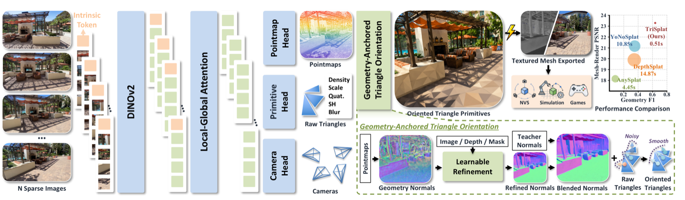
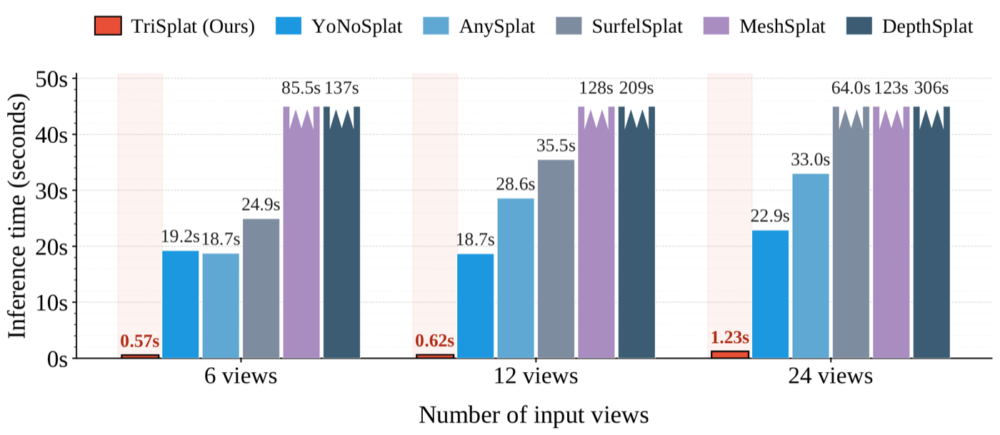

Point maps and poses
A DINOv2-backed transformer decoder predicts dense local 3D point maps, relative camera poses, optional intrinsics, and per-pixel triangle attributes.
Simulation-Ready Feed-Forward 3D Scene Reconstruction
1 Zhejiang University 2 ETH Zurich 3 ETH AI Center 4 Microsoft 5 Monash University
Sparse-view 3D reconstruction is increasingly handled by feed-forward splatting networks, but Gaussian primitives expose surfaces only indirectly. Turning them into meshes still requires expensive TSDF fusion or Poisson reconstruction, which breaks the feed-forward promise and makes downstream simulation cumbersome.
TriSplat represents scenes with oriented triangle primitives. It predicts local 3D point maps, triangle attributes, camera poses, and optional intrinsics from sparse inputs, then anchors triangle orientation to geometry normals refined with image-conditioned cues and a mono-normal bootstrap schedule. Because the rendering primitives are already triangles, the output can be loaded directly into physics engines, collision detectors, and standard renderers.
These viewers load browser-friendly previews for GitHub Pages. Full TriSplat exports contain denser geometry than the interactive web meshes shown here.
TriSplat couples point-map geometry, normal-anchored local frames, and progressive surface sharpening so hard-edged triangle primitives can train stably and export cleanly.

A DINOv2-backed transformer decoder predicts dense local 3D point maps, relative camera poses, optional intrinsics, and per-pixel triangle attributes.
Finite-difference geometry normals are refined by an image-conditioned normal head and converted into tangent frames that orient each triangle primitive.
Opacity and edge blur schedules start with forgiving soft footprints and gradually converge to crisp, mesh-ready surface elements.
Low-opacity triangles are discarded, face winding is corrected, nearby vertices are merged, and the native triangle primitives become a standard mesh.
The page already exposes the exported mesh quality through interactive viewers, so this section keeps the paper result focused on inference efficiency.

@techreport{wang2026trisplat,
title = {TriSplat: Simulation-Ready Feed-Forward 3D Scene Reconstruction},
author = {Wang, Weijie and Li, Zimu and Shi, Jinchuan and Zhang, Zeyu and Ye, Botao and Pollefeys, Marc and Chen, Donny Y. and Zhuang, Bohan},
institution = {Zhejiang University},
year = {2026},
month = {May},
url = {https://lhmd.top/trisplat}
}